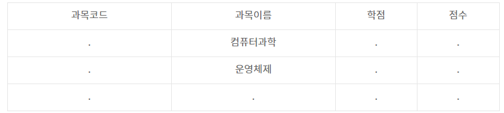
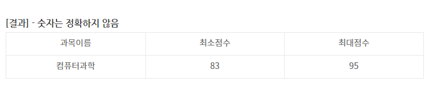

답:
- 리팩토링의 목적은 소프트웨어를 보다 이해하기 쉽고, 수정하기 쉽도록 만드는 것이다.
- 결과의 변경없이 코드의 구조를 재조정하는 것으로 가독성을 높이고, 유지보수를 쉽게하기 위한 목적
- 코드의 외부 행위는 바꾸지 않고 내부 구조를 개선시켜 소프트웨어를 보다 이해하기 쉽고, 수정하기 쉽도록 만드는 것
#include
void main() {
int c=0;
int i=0;
while(i<10) {
i++;
c *= i;
}
printf("%d", c);
}
답안 : 0
- 대,소문자는 구분하지 않습니다.
- 세미콜론(;)은 생략가능합니다.
- 속성명에 작은 따옴표(' ')를 사용합니다.
답안 : DELETE FROM 학생 WHERE 이름 = '민수'
public class Gisafirst{
public static void main(String []args){
int i=0;
int sum=0;
while (i<10){
i++;
if(i%2==1)
continue;
sum += i;
}
System.out.print(sum);
}
}
답 : 30
abstract class Vehicle{
String name;
abstract public String getName(String val);
public String getName(){
return "Vehicle name :" + name;
}
}
class Car extends Vehicle{
public Car(String val){
name = super.name = val;
}
public String getName(String val){
return "Car name :" + val;
}
public String getName(byte val[]){
return "Car name :" + val;
}
}
public class Test{
public static void main(String[] args){
Vehicle obj = new Car("Spark");
System.out.printf(obj.getName());
}
}
답안 : Vehicle name :Spark
int r1( ){
return 4;
}
int r10( ){
return (30+r1( ));
}
int r100( ){
return (200+r10( ));
}
int main( ){
printf("%d ", r100( ));
return 0;
}
답안 : 234
약술형답안- 형상 항목의 버전 관리를 위해서 변경 여부와 변경 활동을 통제하는 활동- 산출물의 변경 사항을 버전별로 관리하여 목표 시스템의 품질 향상을 지원하는 활동
답안- 객체 생성 시 초기화 작업을 위한 함수로써, 객체를 생성할 때 반드시 호출되고 제일 먼저 실행된다.- new 연산자를 통해서 객체를 생성할 때 반드시 호출이 되고 제일 먼저 실행되는 일종의 메소드
약술형답안- 데이터베이스의 구조와 제약조건에 대한 명세를 기술한 것- 데이터베이스의 구조와 제약조건에 관한 전반적인 명세를 기술한 메타데이터의 집합이다.
답안 : 컴퓨터 프로그래밍에서 변수 및 함수의 이름 인자 앞에 데이터 타입을 명시하는 코딩 규칙
[성적]
- 3가지의 과목이름이 주어짐 ( 행도 여러 개 )
- .으로 표시된 것은 빈 값이 아닌 정확한 값이 기억이 나지 않아 .으로 표시한 것
- 대,소문자는 구분하지 않습니다.
- WHERE 구문은 사용하지 않습니다.
- GROUP BY, HAVING 구문은 필수로 사용해야합니다.
- 세미콜론(;)은 생략가능합니다.
- 별칭 ( AS ) 을 사용해야합니다.
- 속성명에 작은 따옴표(' ')를 사용합니다.


답안 : SELECT 과목이름, MIN(점수) AS 최소점수, MAX(점수) AS 최대점수 FROM 성적 GROUP BY 과목이름 HAVING AVG(점수) >= 90